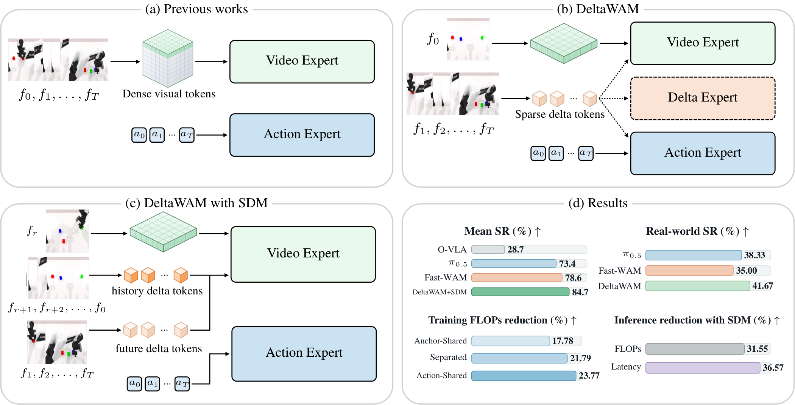
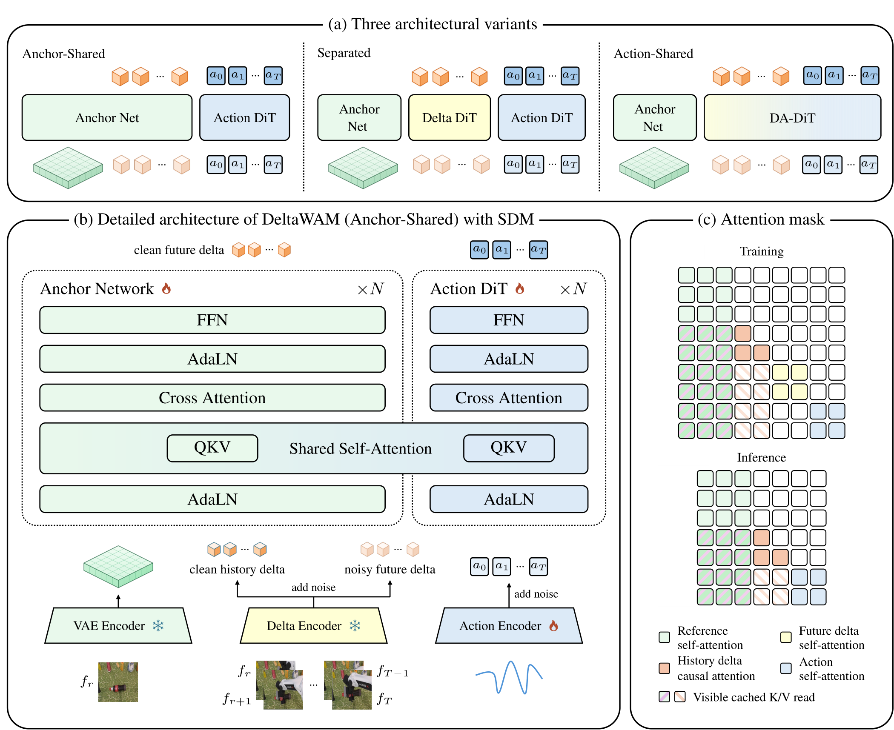

Method Overview

View full-size figure ↗Sparse Visual Deltas & Streaming Delta Memory
DeltaWAM replaces dense future-frame modeling with sparse visual deltas and uses Streaming Delta Memory to update visual context incrementally, improving robustness while reducing training and inference costs.

View full-size figure ↗Overview of the DeltaWAM architecture.
(a) Three architectural variants: Anchor-Shared, Separated, and Action-Shared.
(b) Detailed Anchor-Shared architecture, where the Anchor Network and Action DiT retain stream-specific transformations while interacting through layer-wise shared self-attention.
(c) Structured attention masks regulating information flow among anchor, delta, and action tokens.
Real World Evaluation
Task 01
Tabletop Organization
Task 02
Sugar Cube Placement
Task 03
Bowl Stacking
RoboTwin Simulation
Task 01
Adjust Bottle
Task 02
Beat Block with Hammer
Task 03
Rank Blocks by Color
Task 04
Rank Blocks by Size
Task 05
Click Alarm Clock
Task 06
Click Bell
Task 07
Dump Bin into Big Bin
Task 08
Grab Roller
Task 09
Handover Block
Task 10